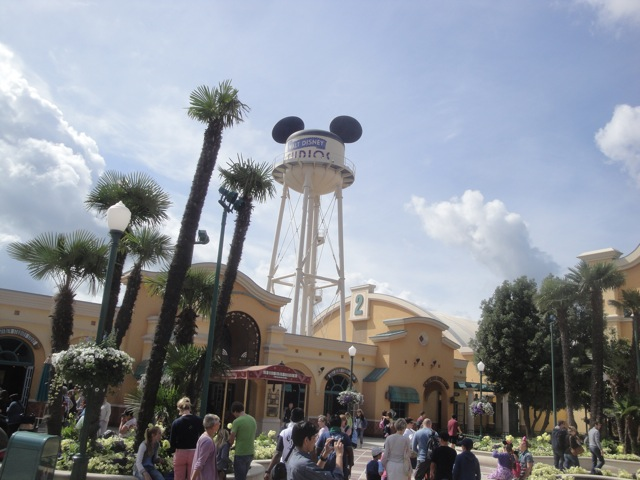
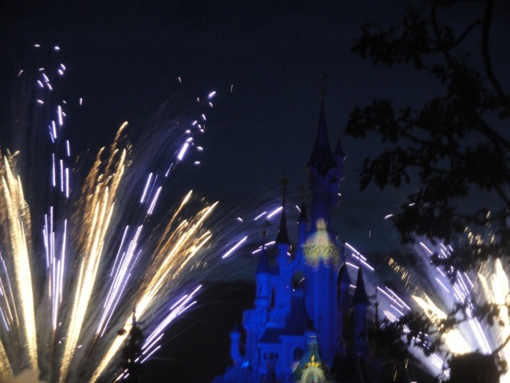

TPR's Mega Europe Trip
Rome Rome Credit Whoring Rainbow Magicland Fiabilandia Mirabilandia
Movieland Studios Gardaland Walygator Parc Holiday Park Europa Park
Fort Fun Heide Park Schlossbeck Movie Park Germany Phantasialand
Parc Asterix
Disneyland Paris

Yes, the Mega Europe Trip has technically come to an end, but I'm here, and I'm not gonna waste this oppertunity to head on over to Disneyland Paris.
We're off in the Disney Studios Park as we're here...
To get this damn credit as it always has a long line, no single riders line, and no fastpass.
Hey Disneyland Paris. A long line, lots of empty seats, how about investing a single riders line for this ride!!!
 What have I been waiting in line for for the past hour?
What have I been waiting in line for for the past hour?
 Hey, its a fun spinning coaster. But compared to Winjas a couple days ago, not nearly as impressive.
Hey, its a fun spinning coaster. But compared to Winjas a couple days ago, not nearly as impressive.
Well on the bright side, that stupid line for Crush's Coaster was the perfect thing to kill the time for my Rock'N'Rollercoaster Fastpass.
Ooh. Pretty Guitars!!!
"Guys, do we really need to put any effort in our show when our audience is just some dumbass Americans?"
Hey, its a great coaster in Florida, and its great in Paris as well. Big win for Disney. =)
 Hey, speaking of really good Disney rides, lets head on Tower of Terror.
Hey, speaking of really good Disney rides, lets head on Tower of Terror.
Ugh. No fastpasses are left. Guess I'll just have to suck it up. =(
Am I in California or Paris? No seriously!!! Can you tell the difference?
Much like California, a total lack of theming in the hallways is also there.
 New for Disneyland Paris last year was the new Toy Story Land.
New for Disneyland Paris last year was the new Toy Story Land.
Hey, it looks really nice and very much like Toy Story.
 But this is the real reason I came into their new area.
But this is the real reason I came into their new area.
Wow. I'm in shock. It appears Disneyland Paris does understand the concept of a single riders line. Now about Crush's Coaster... =)
 RC Racer is pretty much a non spinning half pipe.
RC Racer is pretty much a non spinning half pipe.
 You know, I was expecting this to be a really stupid and pointless ride, but I was actually pleased by it.
You know, I was expecting this to be a really stupid and pointless ride, but I was actually pleased by it.
 Wee!!! Hangtime!!!!
Wee!!! Hangtime!!!!
Knowing the film geek inside me, I had to check out their Animation Studio.
I'm a big fan of the California Animations, so I'm hoping that the Paris one is similar.
It wasn't quite as cool as the California version, but I still thouroughly enjoyed it.
An example of Pinnochio going from storyboard sketches to a fully developed frame.
GAH!!!! I'm gonna have nightmares of this Timon/Captain Hook/Jane from Tarzan Hybrid!!!!!
More fun at Disney Studios.
Hey, the Stars'N'Cars Parade was just rolling by and it was only 5 minutes. So hey. Why the hell not watch it!!?
Well thats about all I need at Disney Studios.
 Yep. Thats a wrap here. Onto Disneyland Paris.
Yep. Thats a wrap here. Onto Disneyland Paris.
Ooh. Pretty Fountain.
Flower Mickey now welcomes us to Disneyland Paris.
3 Disney Parks down, 2 left to go.
HOLY CRAP!!!! THEIR CASTLE LOOKS SO NICE!!!!!
 All right. Lets start out with French Space Mountain. This is by far the most unique of the Space Mountains with a launch and inversions.
All right. Lets start out with French Space Mountain. This is by far the most unique of the Space Mountains with a launch and inversions.
Now I've heard many bad things about this Space Mountain. I've heard about its rough as hell and beats your skull to peices. Hey, it can't possibly be any worse than Gouderix.
I really liked it. Yeah, it was rough, but not unbearable rough. And it had some cool lights and the inversions were fun.
Hey!!! What the hells up with Indiana Jones!!!?
Yep. Indiana Jones is down for maintenence. Damn. First missed credit of the trip. =( Luckily, it was on the last park and the only missed credit.
"Hey!!? I thought the French liked to smoke!!! So why are smoking areas empty!!?" Well, its simple. Nobody enforces the smoking rules and everybody just smokes all over the place. Luckily, Second hand smoke doesn't really bother me too much. But I'd still like to have these smoking areas enforced. But hey, whatever.
This is where I ate dinner. I was just planning on just waiting till I got to my hotel room and just eating some trail mix that I bought before the trip and was just carrying for times like this, but I was STARVING since I hadn't eaten since breakfast and after 12 hours without food, you negotiate with yourself to break your budget for the purpose of not spending my time at Disneyland Paris pissed off cause I'm starving to death.
 Hey, it may have been typical theme park food, but to a starving man, it tastes amazing. And the Disney Cartoons they were playing were cool.
Hey, it may have been typical theme park food, but to a starving man, it tastes amazing. And the Disney Cartoons they were playing were cool.
All right. We decided to check out Phantom Manor, which is basically Disneyland Paris's version of Haunted Mansion. And its by the best version of them all.
First off, it has a great story and a great theme.
They even managed to connect it to Thunder Mtn. Yep, Disneyland Paris connected their Haunted Mansion to their Thunder Mtn. Thats why the graveyard is western themed. Go check out the full story. Its pretty interesting.
 Hey, if their Haunted Mansion is that great, I wonder how good their Pirates of the Carribean is.
Hey, if their Haunted Mansion is that great, I wonder how good their Pirates of the Carribean is.
 By far the best of the Pirates. It mixes the ride up and adds more to it and puts in more detail. I loved it.
By far the best of the Pirates. It mixes the ride up and adds more to it and puts in more detail. I loved it.
Oh no. Somebody's balloon got stuck in the sky.
Now if you really want to check out something unique to the Disneyland Paris Resort, be sure to check out Alice's Curious Labyrinth.
Yeah. Its pretty much just a maze, and man is it fun as hell.
 Warning. You may very well get wet in this maze.
Warning. You may very well get wet in this maze.
Here. Have a puff and see all the wonders of this maze.
"Oh man dude!!! I'm tripping out so hard that I see a castle in the rain clouds!!!!"
"Hey buddy!!! The slides closed!!! Move along!!!"
Ok. I can see why they closed the slide.
Yep. We rode It's a Small World here in Disneyland Paris. And honestly, I enjoyed it. I was mostly amused by how they portrayed America here. =)
Hey, now that the park is suddenly dead, we can check out everything!!! We even managed to ride Snow White.
Hey Florida!!! What happened to your Snow White Ride!!!? =P
Yeah. We had time for yet another Fantasyland Dark Ride.
 Disneyland Paris is the only Disney Park to not have upgraded their Star Tours ride. So it actually felt really cool and almost nostalgic riding the original again. =)
Disneyland Paris is the only Disney Park to not have upgraded their Star Tours ride. So it actually felt really cool and almost nostalgic riding the original again. =)
Nice Walle Statues you've got there.
Hell, we even had time to through the 20,000 Leagues Under the Sea Walk Through.
Can I please take the squid home with me?
There's really not much to see here. Its just another Aladdin Walk Through.
 All right. Time for us to get the last credit of the trip. The Paris Big Thunder Mtn.
All right. Time for us to get the last credit of the trip. The Paris Big Thunder Mtn.
Umm, can somebody please explain why we just stopped in the middle of the tunnel for no reason!!?
Well it broke down, and HOLY SH*T!!!! WE'RE GETTING EVACUATED!!!!! =)
Well this was certainly a memorable experience. Check out the video I got of the experience.
"This may very well be the happiest moment of my life."
I even managed to top off the night by seeing Disneyland Paris's new show. Disney Dreams

This show can't decide if it wants to be in English or French. So it alternates between the two languages.
 But seriously. This show was incredible. It really reminded me of a cross between the normal fireworks and World of Color. You can tell that they really did a great job. I'm impressed. =)
But seriously. This show was incredible. It really reminded me of a cross between the normal fireworks and World of Color. You can tell that they really did a great job. I'm impressed. =)
This is where I stayed for the night. Hey, it may have been a pain to find, but it was nice and it was like 1/6 of the price of staying on Disney Property.
Hey. Where are all the crowds!!?
Well, we first started out on Thunder Mtn since we got fastpasses to come back since we got evacuated last night. Now I don't have to worry about the question of does it count as a credit if you have to get evacuated in the middle.
Hello duck. Hows it going!!!?
 Who's the super whore whos making us ride the psuedo credit!!!?
Who's the super whore whos making us ride the psuedo credit!!!?
 After all the cool powered coasters such as the ones at Europa Park and Heide Park, I am not impressed.
After all the cool powered coasters such as the ones at Europa Park and Heide Park, I am not impressed.
They also have a Storybook Canals here. And yeah. They have all the typical stuff and all the typical princess castles such as here is the tower from Tangled.
Ok. Now answer this for me. What the hell is the Emerald City from the Wizard of Oz doing in the Disney Storybook Canals!!?
Hey, we just decided to hop on the train and take a lap around the park to relax.
Oh yeah. When at Disneyland Paris, don't forget to check out the dragon underneath the castle. Its pretty cool.
 Yeah. We had lunch at the Earl of Sandwhich. Hey, its a good chain and I'm glad they're opening their first store in California sometime soon.
Yeah. We had lunch at the Earl of Sandwhich. Hey, its a good chain and I'm glad they're opening their first store in California sometime soon.
Congratulations to 20 years Disneyland Paris.
Why is it that I always skip Buzz Lightyear at my Non-Home Disney Parks? It was one of the few things I didn't bother doing at the Walt Disney World Resort and I didn't bother doing it here even with all my free time. =/
I decided to settle with a ride on Space Mountain to be my last ride of the trip.
And yes. Sadly, my Mega Europe Trip is coming to an end. ='(
I really don't want to get back on the plane to L.A. =(
Well, at least I was in first class for the 14 hour flight. And yeah. That was my Crazy Mega Europe Trip and I loved every last minute of it. I can't wait for my next huge trip and I can't wait to get back to Europe.
Home